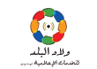
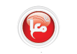
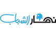
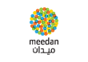

Social Media Fact-Checking
الاعلام الاجتماعي للتحقق من الوقائع
Tweet
Follow @checkdesk
Name:
Email Address:
These great partners are Liveblogging Checkdesk
شركاؤنا يدوّنون تشك دسك مباشرة



Proudly powered by  بفخر مدعوم من